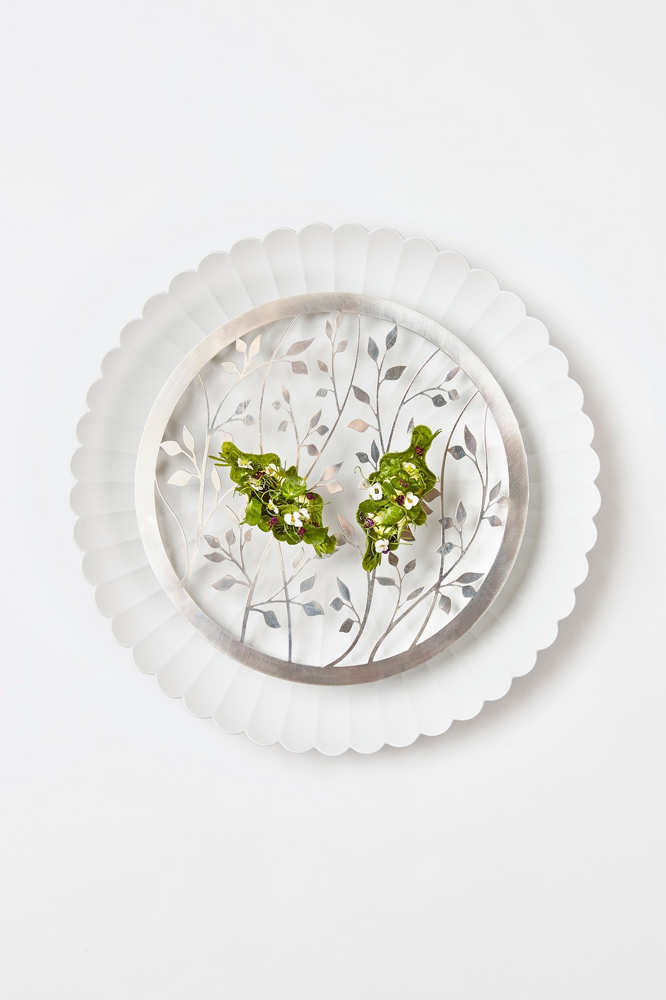
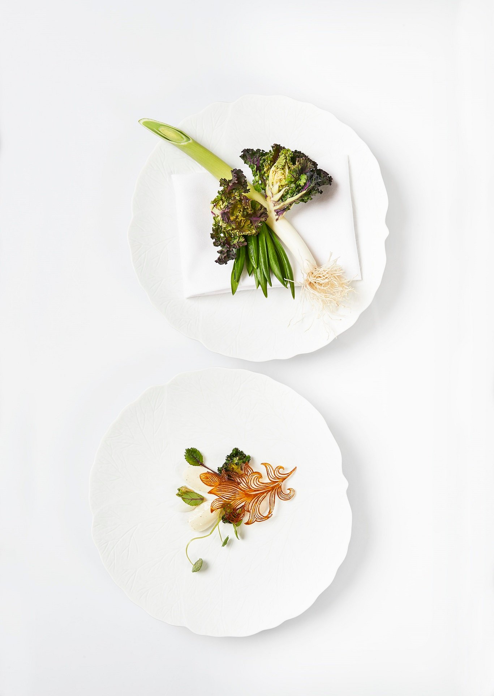
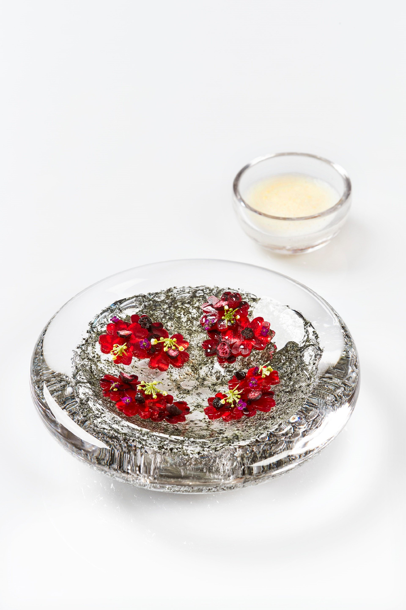
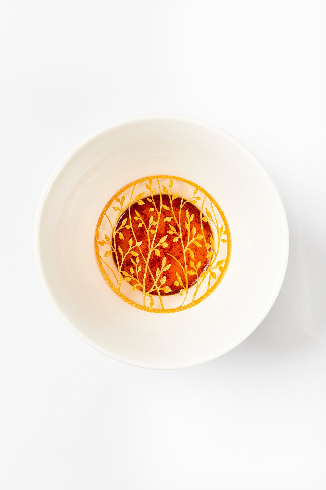
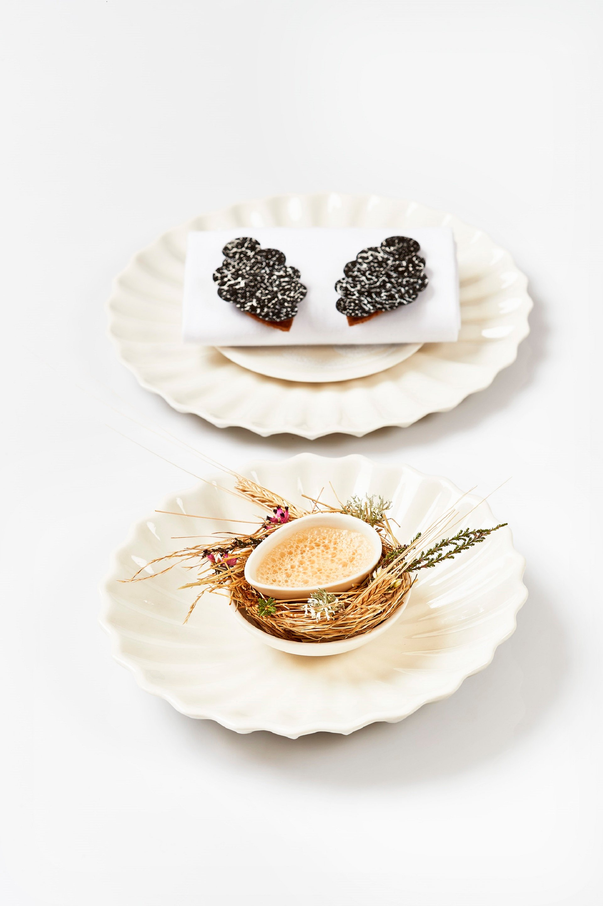

Geranium is a Danish gourmet restaurant, situated in Parken in the center of Copenhagen.
The head chef is the Danish chef Rasmus Kofoed, who won the Bocuse d'Or in 2011.
It was one of the first Danish three-starred restaurants according to the Michelin Guide. In 2022,
it was named best restaurant in the world by The World’s 50 Best Restaurants.
Restaurant Geranium was opened in the spring of 2007 in Kongens
Have in Copenhagen by Rasmus Kofoed and Søren Ledet.
Although the restaurant received a Michelin star in 2008,
it was forced to close in 2009, but reopened in Parken, Østerbro in 2010.
In March 2013 the restaurant received two Michelin stars.
In April same year it was named the world's 45th best restaurant by San Pellegrino's The World’s 50 best restaurants in 2013,
which was an improvement of four positions, going from the 49th position.
The restaurant kept the two Michelin stars for 2014.
On February 24, 2016, Geranium was the first Danish restaurant to recieve three Michelin stars.
The Norwegian Michelin restaurant Maaemo also received three stars,
which made these two restaurants the first Nordic restaurants to have three Michelin stars.
In 2022, Geranium was named the world's best restaurant by San Pellegrino's list
The restaurant is situated on the 8th floor in Fælledparken (Common Gardens) in the center of Copenhagen,
from where one can follow the seasons' journey through the tree crowns,
catch glimpses of the city's green copper roofs and just see the windmills of Oeresund.
The location emphasizes Geranium's vision of gastronomic clarity and diversity.
We explore the area of tension between the urbane and the natural.
Geranium invites guests to taste nature while simultaneously observing it around them.
The locally-inspired, seasonally-changing ‘Universe’ tasting menu takes place over a minimum
of three hours with around 20 courses split evenly between appetisers, savoury dishes and sweets.
Since making Geranium the first Danish restaurant to win three Michelin stars in 2016,
co-owners Rasmus Kofoed and Søren Ledet have never rested on their laurels,
keeping it fresh and exciting for regulars and destination diners alike.
In 2022 they reach the zenith of their careers, with Geranium named The World’s Best Restaurant,
sponsored by S.Pellegrino & Acqua Panna.

RAMSUS KOFOED:
a co-owner and a headchef and a star chef of three Michelin-starred Geranium in Copenhagen.
He is influencing an entire generation of young chefs to
feel confident in offering haute cuisine based on strictly vegetarian principles.
During the pandemic, he temporarily opened Angelika, a restaurant within Geranium,
with a wholly plant-based menu.
Kofoed has never backed down from a challenge,
after reaching the upper echelons of the World’s 50 Best Restaurant list last year,
second only to fellow Copenhagen restaurant Noma,
he decided to rework the restaurant menu,
the interior and the experience to make something fresh,
more authentic and closer to the passions that drive him.
“The inspiration comes from reaching out to life, the life that surrounds me at the moment.” Chef Kofoed said.
| Item | Explanation |
|---|---|
|  | Danish tradition: Salted herring in crispy algae with dill stems & aquavit |
|  | Winter Greens from Kiselgården: flowering Brussels sprouts, leeks & wild onions |
|  | Boiled beetroots, birkemosegård, dried blueberries & horseradish |
|  | Cloudberry, pumpkin & white chocolate |
|  | Forest mushrooms, beer, smoked egg yolk, pickled hops & rye bread | For more information
Per Henrik Lings Allé 4, 8. Sal, 2100 København, Denmark